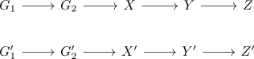
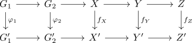

morphism of exact sequences of sets
Definition
Let

Then a morphism between those consists of maps

such that
- the diagram commutes
- $\varphi_1,\varphi_2$ are group-homomorphisms
- $f_X$ is a map such that
\begin{align*}
f_X(g \cdot x) = \varphi(g) \cdot f_X(x)
\end{align*}
- $f_Z$ is a pointed maps